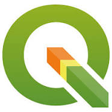

Workshop Thursday July 25th (1-3pm) AEST: Switching over to QGIS with Emma Hain
What: Switching over to QGIS
Who: Emma Hain, Product Manager and Senior GIS Specialist, North Road
When: 1-3 pm, Thursday, 25th July
Where: Online only (link to join here)
Description: Emma will use her in-depth knowledge of QGIS to take provide everything that is needed to switch to QGIS. She will cover the basics of what QGIS is, the difference between QGIS and ArcGISPRO – and why you are going to love QGIS! Then, Emma will go through the setup requirements, some translation that’s required to move from ArcGIS, the costs involved, and other related products.
If you have ever considered the switch to QGIS – or even if you are using it but want a better foundation – you wont want to miss this one.

Upcoming workshops
To be announced soon….
Upcoming Geospatial events
This year’s FOSS4G SotM Oceania Conference will be held in Hobart from November 5-8th. Call for papers is open and there will be a Travel Grant Program. Sign up for their newsletters to keep up to date.
Get involved in more geospatial communities
Sign up to QGIS AU group and check out their weekly newsletters
Training opportunities
Hydrographic Surveyors Program and Marine Geospatial Program Training This Program commences Sep 24 and comprises 13 weeks of theoretical training delivered over a 23-week period, then a 9-week practical period where students and instructors co-locate for hands-on-training and assessment. This delivery provides the maximum flexibility for students and employers by minimising the duration that students are away from their home or workplace. More information here
Geospatial Share - July Newsletter | Upcoming workshop: Switching over to QGIS with Emma Hain Geospatial Share - July Newsletter | Upcoming workshop: Switching over to QGIS with Emma Hain Geospatial Share - July Newsletter | Upcoming workshop: Switching over to QGIS with Emma Hain Geospatial Share